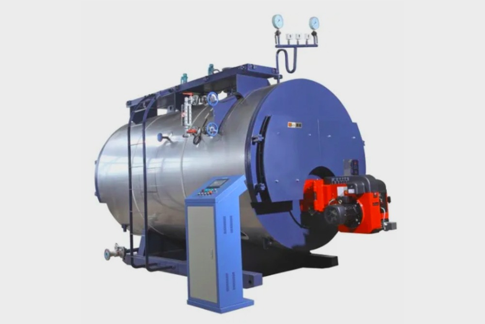
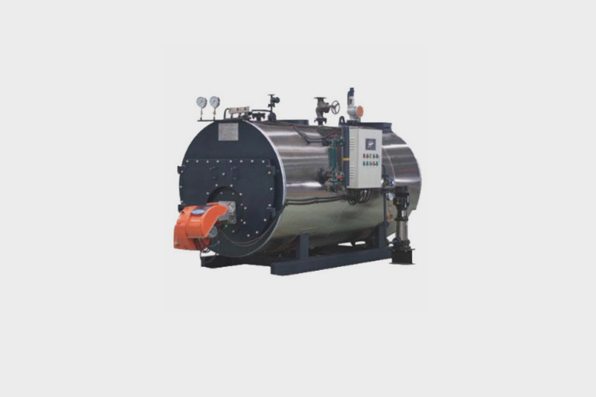

What to Consider When Buying an Industrial Steam Boiler?
There are many steam boilers in the market today. It can be difficult to know which model is best for your business. The type of steam boiler that you choose depends on the level of efficiency that you require in your process. If you are unsure of the type of boiler that you wish to buy for your business, here are some of the most commonly used steam boilers.
Given the fact that the steam boiler has been proven to be the most energy efficient and economically viable solution for most industrial processes, it is not surprising that virtually every industry is investing in new steam boiler projects. This includes the construction of new boilers. The various industrial boilers available for purchase and installation must be properly assessed and considered before making a purchasing decision.
Safety
In the beginning, the steam boiler was a simple piece of equipment. Today, they are complex systems of high-pressure boilers, pipes, and pumps, as well as safety systems and controls, all of which must work together. In addition, older boiler systems may need to be upgraded or replaced as new regulations become effective.
One of the most important factors in the selection of an industrial steam boiler is security. As it is important to be assured that your boiler is maintained correctly, an expert should be consulted before you move ahead with the purchase.

Power to produce hot water and steam
Steam boilers are a type of boiler that uses steam to produce hot water and steam. In most cases, there are two types of steam boilers: hot water and steam. Industrially produced steam boilers are used to produce steam from the combination of water and steam. Steam boilers are used to produce steam from the combination of water and steam.
The humble boiler is something many people take for granted, but they are often the heart of their facility's operation. They are the primary source of hot water or steam for heating, circulating or heating waste water, and generating steam for cleaning or sterilization. Today's boilers are more energy-efficient than ever, and many facilities are turning to them to reduce their energy costs. Here are five things to consider before you buy.

Size of steam boiler
Over the past few years, the only thing that's hotter than a steam boiler is a steam boiler repair. Boilers can be expensive and hard to install, but we're here to help. When you're ready to buy a new boiler, we can help you pick out the best boiler for your needs and your budget.
As with any construction project, purchasing a steam boiler for your business is a big decision that needs to be made carefully. There are many things to consider, such as the size of boiler you'll need, the operating pressures, the type of fuel, and the maintenance costs.
Operational specifications
An industrial steam boiler is a large tank of water that heats up, turns into steam, and moves the heat energy into the process that needs heat. The heat energy moves into various equipment, where it activates or drives the equipment. The heat energy moves into the process, where it heats the process. The heat energy moves into the product, where it heats the product. All of these are critical, as they are all part of the process of converting heat energy into useful work.
Final Words
Large-scale boilers are the only way to get reliable, uninterrupted heat and steam for a commercial facility or a factory. Also, you can use boilers to not only heat and cool spaces, but also to provide electricity and power.